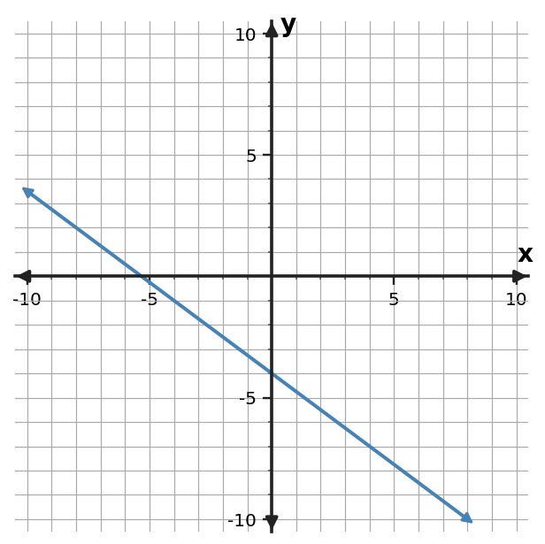

Algebra 1 • Unit 2
Section 2.2 — Ticket A
1Graph $y=-3x-7$. Mark the $y$-intercept and at least one additional point that shows the slope. | 2Use the graph to identify the $y$-intercept and describe whether the function is increasing or decreasing.  |
3Read the trip graph to estimate the distance at 4 hours. The requested time is inside the displayed 0-to-8-hour window.  | 4On a graph, each horizontal grid step represents 3 units and each vertical grid step represents 5 units. A student moves right 3 grid step(s) and up 3 grid step(s) and calls the slope $1$. Identify the scale error and give the numerical slope. |